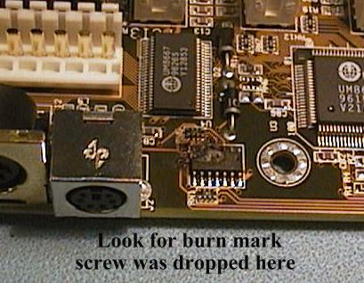
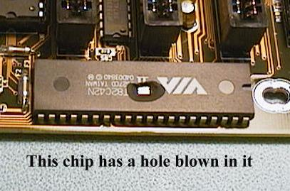

Synthetic materials like those clothes, carpets and furniture are made of are bad offenders, particularly in very dry weather conditions. They are very good insulators and when a charge is built up on them, it will not flow away due to leakage, it must be discharged by coming into contact with another body. These materials generate high voltage Static Electricity charges when rubbed together. All of us have had a mild electric shock from a door handle, a metal cabinet or a similar object, after we have walked some distance over a carpet or vinyl floor, or moved around on a plastic chair. The motion of our body clad in clothing made of synthetic cloth causes us to be charged to a high potential relative to surrounding objects. These mild electric shocks cause us some discomfort when they occur but this is insignificant when we look at the damage they do to modern electronic components.
The following table illustrates the typical magnitude of the voltage developed is some common situations.
| Source of ESD voltage | Typical Electro Static Voltage in KV at a relative humidity of 20% |
|---|---|
| Walking across Vinyl floor | |
| Walking across synthetic carpet | |
| Opening a plastic bag | |
| Arising from a foam cushion | |
| Sliding plastic box on a carpet | |
| Removing plastic tape for a PC board | |
| Removing shrink film from PC board | |
| Triggering a vacuum solder remover | |
| Spraying aerosol freezer spray |
An example of how much humidity effects these figures can be shown by looking at the figure for two of the above examples at a relative humidity of 70 to 90 %. The figure for Walking across a vinyl floor falls from 12 KV to 0.25 KV and the opening a plastic bag figure falls from 20 KV to only 0.6 KV.
Modern electronic integrated circuits are getting more and more devices on the piece of silicon. The internal devices are getting smaller and smaller with device sizes now as low as .3 microns. This means the voltage and amount of current from ESD that will damage devices is now very low. The need to make these circuits operate at faster and faster clock speeds has meant the internal protection devices that were used on the input and output leads are now not very often used, as they extra Capacitance they add to the circuit limits the operating speed of the device.
To add the the problem is the fact most of the damage done by ESD does not result in "instant death" of the device. The damage is said to be Latent Damage and often only shows up as degradation of performance and usually eventual failure after some period of functioning apparently normally. Devices damaged in this way are often referred to as the "walking wounded".
Instant death, usually called "Catastrophic Failure", only occurs in about 10% to 20% of devices damaged by ESD. This sort of damage is the best because it will not cause devices to get built into equipment and fail when they are most needed. Imagine a medical life support machine that failed due to an ESD damaged device, when you were on the operating table !.
It is not only the actual contact with devices that can destroy or damage them, they can also be damaged by the electric field radiating out from an electrostaticaly charged body. MOS technology devices, the most common high technology chips in use today, are most susceptible to voltage or electrostatic field damage. Bipolar and TTL devices are more susceptible to current damage, the current generated by the flow of current due to the passage of an Electro Static Discharge through the device.
Typical figures for susceptibility of devices to ESD damage
| Device type | ESD susceptibility |
|---|---|
| Bipolar transistors | 380 to 7000 Volt |
| CMOS logic devices | 250 to 3000 Volt |
| EPROM devices | 100 volt |
| Film resistors | 300 to 3000 Volt |
| TTL logic devices | 1000 to 2500 Volt |
| Microprocessor chips | as low as 10 Volt |
Conductive protective materials
Conductive materials provide the highest level of protection
. Materials such as metals, conductive plastics, and conductive laminates are common, and metal wire impregnated bags are also used. The most common element used to make plastic materials conductive is carbon but this has the disadvantage of shedding material that may contaminate components or assemblies. Another problem with conductive protection is the possibility of static discharge through a conductive bag, the the devices inside.
Static dissipative protective materials
These materials provide a lower level of protection and are made out of the same materials as the Conductive Protection materials. They are thinner than the conductive materials.
Anti-static protective materials
Anti-static materials provide the lowest level of protection. Materials include some melamine laminates, high resistance conductive plastics, virgin cotton, wood and paper products, and static dissipative or conductive materials of very small thickness. The problem with these materials is that they provide protection against ESD induced electrical currents but provide no protection for ESD voltage fields.
Grounding is achieved by connecting the work area, the operator and the items being worked on, to a known good grounding point with grounding straps. This can be achieved in the field if the power points have a good earth, by equipping a three pin power plug with a ground wire only, and clip that can be attached to a grounding mat. It is important to test the power point for an effective earth before relying on this method.
Isolation and neutralization is achieved by using th conductive protection materials described above.
When repairing equipment out in the field the minimum equipment to ensure a measure of ESD protection is:
Field Service Technicians must also wear suitable clothing and avoid handling objects that can generate dangerous electrostatic potentials. These objects include non protective bags and containers, beverage and food containers, and furniture.
Protective clothing
Long sleeved smocks are available that should be worn over static generating clothing. They are made from ESD protective material and have fine conductive threads woven into the cloth. Conductive hair nets are available as hair is a major source of static electricity.
The work station
The conductive bench top surface must be hard wearing and be able to withstand heat and the commonly used chemicals. A light neutral colour is important as it makes small objects placed on the surface, easy to find. Pale blue is the most common colour used. The bench top or mat must be earthed to a ground point through a safety resistor of 10 Meg ohm.
An ESD safe chair will have conductive wheels and drag chains to ensure it makes good contact with the conductive floor mat. The seat cushions should be made from conductive material so no static electricity charges are built up with movement of the operator, on the chair.
Suitable conductive floor coverings are available as rubber matting, tiles or carpet material. Like the other grounding items, the conductive floor covering should be grounded through a 10 Meg ohm safety resistor.
If it is important to have the highest level of protection against ESD then an Ionised Air Blower will neutralise static charges built up on non conductive items, by supplying a constant stream of both positive and negative ions to the work surface.
The most common static-safe bags are the dark metalised transport bags PC cards are usually delivered in. They offer good al round protection and are semi transparent so the items inside can be viewed without the need to remove them from the bag. The pink anti-static bags and the bubble wrap will prevent the generation of electrostatic charges and provide physical protection, but they do not offer electrostatic shielding protection.
Conductive tote boxes with lids should be used to transport materials to and from the work place. Open storage trays and boxes made out of conductive materials can be used for storage on the work station.
Conductive foam is useful for short term storage and for ensuring all the leads of particularly sensitive devices are shorted together during storage.
Metal foil can be used to protect component devices when no suitable specialised containers are available. Care must be taken not to bend the pins on devices when wrapping them in this material.
A wide range of specialised device storage tubes are available and new components are usually supplied in this type of packaging. The most easily recognised one of these is the tubes used to transport and store DIL chips. They protect against ESD and physical damage.
Under no circumstances should a Peripheral card of any sort be plugged into the Buses on a System Board with the power on. It is impossible to align the pins on the connectors exactly and this will mean adjacent Bus fingers will be shorted together. The chances of destroying both the card and the system board are very great. The various digital signals on the Bus (data address and control) exist along side power rails and earth pins and all you have to do is to short a power rail to a signal pin and the hardware will be destroyed.
The following two images explain another hazard. A technician had just finished assembling a new Pentium 150 Computer and found he had left a screw out of one of the back plane covers. Without switching the computer off, he attempted to screw the missing screw into the back plane but dropped it onto the system board. These images tell the rest of the story. The System Board, the Sound Card and the Video Interface card were destroyed in this incident.


About all we can do is look at the voltages on the power supply connector pins and feel the Processor chip to see if it is warming up. If the processor is operating (getting clock signals) it will warm up after being on for a few minutes.
There is only one tool that can be safely used to analyse a PC Bus and that is a POST card.